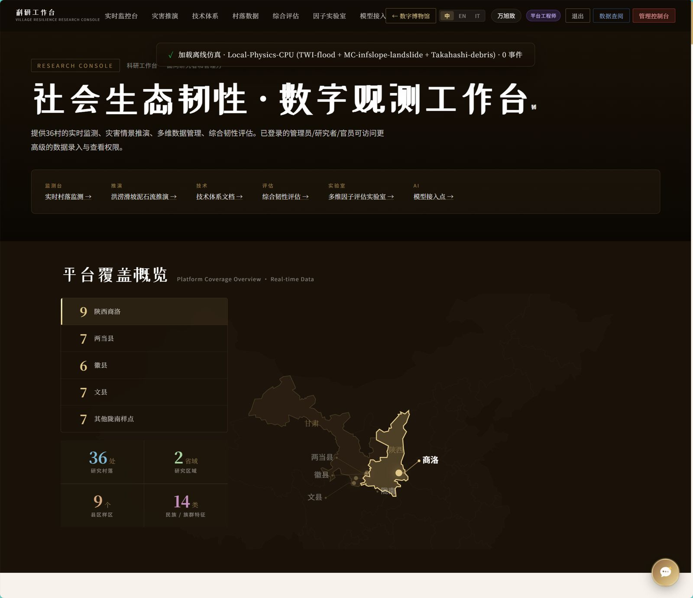
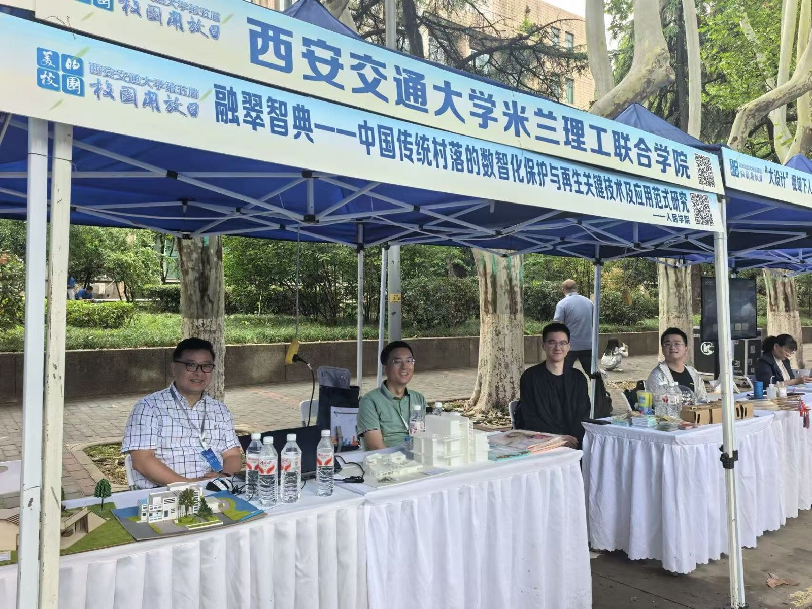

Architecture undergraduate
Xi'an Jiaotong University
Xi'an, China
I am an architecture undergraduate at the XJTU–POLIMI Joint School. I conduct research under the supervision of Prof. Binqing Zhai.
My research connects AI and geospatial methods with architecture and traditional settlements, focusing on digital heritage, digital twins, and climate and disaster resilience.
I am looking for research-oriented master's / PhD opportunities in AI + Built Environment and Geospatial AI.
Xi'an Jiaotong University
Xi'an, China
Politecnico di Milano
Milan, Italy
Five-year Bachelor of Architecture programme · 2023 cohort · Expected graduation: 2028
Research under the supervision of Prof. Binqing Zhai
* Equal contribution (co-first author)
This study develops a courtyard-scale framework for assessing visual–material integrity in mountain traditional villages. UAV orthophotos, 3D meshes and point clouds are combined with roof-material recognition and 3D viewshed analysis to measure material penetration, material–colour conflict and visual exposure. Applied to 749 courtyards in nine villages in Shangluo and externally validated in Longnan, the framework uses XGBoost–SHAP to identify the features associated with integrity loss and support conservation prioritisation.
Focusing on Dingxi, Linxia and Gannan in southwestern Gansu, this study integrates natural, social, economic, demographic and cultural dimensions into a full-chain framework for social–ecological vulnerability assessment and forecasting. It examines county-level changes during 2000–2020, identifies driving factors with Elastic Net and projects trajectories to 2035 using a BP neural network. Vulnerability declines overall, while regional differences and local rebound risks persist. The results highlight the importance of socio-cultural capital and demographic structure for context-sensitive risk management.
National Undergraduate Innovation Training Programme (2025)
Project Leader · 2025.06–2026.06
Supervisor: Prof. Binqing Zhai
Multi-source data capture, GIS, computer vision and machine learning to study disaster risk, building character and conservation of traditional villages, with a local-wisdom database and a digital-twin display platform.
Undergraduate Innovation Training Project
Applied: 2026.03 · Planned: 2026.05–2027.05
Project Leader · Supervisor: Prof. Binqing Zhai
UAV photogrammetry / LiDAR, 3D Gaussian Splatting, AI recognition and Unreal Engine 5 disaster scenario simulation with MR/XR presentation.

Web platform built on UAV 3D reconstruction (point cloud / mesh / 3D Tiles) for village disaster monitoring and digital-twin display.
Visit website ↗ (opens in a new tab)
Rural digital website presenting traditional villages.

Rural digital web dashboard for social-ecological resilience observation.

UAV aerial survey and image-based modelling of villages, producing point clouds, meshes and 3D Tiles as a digital-twin base.

YOLO image recognition to detect house types.

Flood / landslide scenarios in Unreal Engine 5 and mixed-reality experiences, exhibited to the public at the XJTU Campus Open Day.
Silver Award
China International College Students’ Innovation Competition · XJTU campus round · “Youth Red Dream” track · Project leader
Second Prize
36th XJTU “Tengfei Cup” · Innovation track
First Prize
Xuechuang Cup · Beijing Digital Marketing Simulation Competition · Undergraduate group
Gold Award · National
China International College Students’ Innovation Competition · International Track
Bronze Award · National
China International College Students’ Innovation Competition · International Track
Ranked 1st in final defence
National Undergraduate Innovation Training Programme
First Prize
35th XJTU “Tengfei Cup”